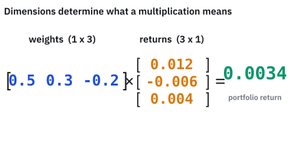
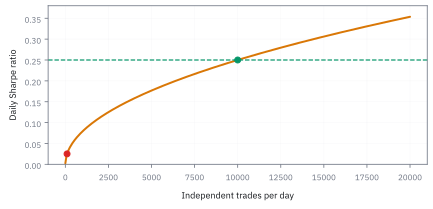
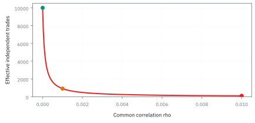

3.1 The Law of Large Numbers
ต้องเก็บข้อมูลเท่าไร จึงจะแยกกำไรเล็กน้อยออกจากความผันผวนได้
กลยุทธ์หนึ่งได้เปรียบเฉลี่ยเพียงครึ่งเซนต์ต่อไม้ แต่กำไรแต่ละไม้แกว่งระดับสองดอลลาร์ ถ้าเทรดวันละหมื่นไม้ หนึ่งวันพอพิสูจน์ความได้เปรียบหรือยัง? คำตอบเริ่มจากแยก กำไรรวม ออกจาก ค่าเฉลี่ยกำไรต่อไม้ แล้วถามว่าความไม่แน่นอนของแต่ละอย่างโตหรือลดอย่างไร
1. กำหนดโลกสมมติก่อนนับข้อมูล
ให้ $X_i$ เป็นกำไรสุทธิหลังต้นทุนของไม้ที่ $i$ หน่วย USD สมมติว่าแต่ละไม้เป็นอิสระและมีการแจกแจงเดียวกัน เรียกย่อว่า i.i.d. โดยมีค่าเฉลี่ย $\mu=0.005$ USD และส่วนเบี่ยงเบนมาตรฐาน $\sigma=2$ USD เราใช้ 10,000 ไม้ต่อวันและ 252 วันเทรดต่อปีเป็นสมมติฐานของตัวอย่าง ไม่ใช่คำรับรองผลกำไรจริง
$S_n$ คือกำไรรวมของ $n$ ไม้ ส่วน $\bar X_n$ คือกำไรเฉลี่ยต่อไม้ พารามิเตอร์ $\mu$ เป็นคุณสมบัติของแบบจำลองที่เราอยากรู้ แต่ค่าเฉลี่ยตัวอย่างเปลี่ยนได้ทุกครั้งที่เก็บข้อมูลชุดใหม่
2. จากผลรวมไปสู่ความไม่แน่นอนของค่าเฉลี่ย
ลองเหรียญยุติธรรมก่อน: ให้ $B_i=1$ เมื่อออกหัว และศูนย์เมื่อออกก้อย จึงมี $\mathbb E[B_i]=1/2$ และ $\operatorname{Var}(B_i)=1/2-(1/2)^2=1/4$ ถ้าโยนอิสระ $n$ ครั้ง จำนวนหัว $H_n=\sum_iB_i$ มีค่าเฉลี่ย $n/2$ และ SD $\sqrt n/2$ แต่สัดส่วนหัว $H_n/n$ มี SE $1/(2\sqrt n)$ ที่ 4, 100 และ 10,000 ครั้งได้ 0.25, 0.05 และ 0.005 ตามลำดับ จำนวนครั้งยิ่งมาก จำนวนหัวอาจห่างจากครึ่งหนึ่งมากขึ้นในหน่วยครั้ง ขณะที่สัดส่วนมีความคลาดเล็กลง
ความคาดหวังบวกกันได้แม้ข้อมูลสัมพันธ์กัน แต่การบวก variance ตรง ๆ ต้องไม่มี covariance ระหว่างไม้ ภายใต้ i.i.d. จึงได้
การหารตัวแปรสุ่มด้วย $n$ ทำให้ variance หารด้วย $n^2$ ไม่ใช่ $n$ เมื่อถอดรากจึงได้ standard error หรือ SE: ส่วนเบี่ยงเบนมาตรฐานของตัวประมาณเมื่อสุ่มข้อมูลซ้ำ
กำไรรวมยังแกว่งมากขึ้นเมื่อเทรดมากขึ้น แต่กำไรเฉลี่ยต่อไม้แกว่งน้อยลง การทำให้ SE ลดครึ่งหนึ่งต้องเพิ่มข้อมูลสี่เท่า นี่เป็นอัตราที่ช้ากว่าความรู้สึกว่า “มีข้อมูลเยอะแล้ว” มาก
3. คำตอบของโต๊ะเทรด: หนึ่งวันยังไม่พอ
เมื่อ $n=100$ ได้ SE = 0.20 USD ต่อไม้ เมื่อ $n=10{,}000$ ได้ SE = 0.02 USD ต่อไม้ ซึ่งยังเป็นสี่เท่าของค่าเฉลี่ยจริง 0.005 USD ถ้าต้องการให้ SE เท่ากับค่าเฉลี่ย หรือครึ่งหนึ่งของค่าเฉลี่ย ให้แก้สมการย้อนกลับ
ที่หมื่นไม้ต่อวันคือ 16 และ 64 วันตามลำดับ ตัวเลข 64 วันทำให้ สัญญาณเฉลี่ยจริงมีขนาดสอง SE ไม่ได้รับประกันว่าค่าเฉลี่ยที่สังเกตจะเป็นบวก หรือว่าการทดสอบจะมีพลังเพียงพอ ประเด็นนั้นต้องใช้การแจกแจงของตัวประมาณในหัวข้อถัดไป
ภาพ 3.1a — ค่าเฉลี่ยสะสมกับสเกลความไม่แน่นอน

เส้นค่าเฉลี่ยสะสมในภาพสร้างจากคลื่น sine/cosine เพื่อสาธิตการแกว่ง ไม่ใช่ผลสุ่ม i.i.d. จริง เส้นแนวนอนคือ 0.005 USD และแถบเทาคือสเกล $\mu\pm2/\sqrt n$ ของแบบจำลองอิสระ จึงไม่ควรอ่านแถบนี้เป็นช่วงความเชื่อมั่นที่ผ่านการสอบเทียบให้เส้นสาธิต
4. LLN รับประกันอะไร และพิสูจน์อย่างไร
กฎจำนวนมาก (law of large numbers, LLN) แบบอ่อนกล่าวว่า สำหรับระยะคลาดเคลื่อนคงที่ $\varepsilon\gt0$ โอกาสที่ค่าเฉลี่ยตัวอย่างห่างจาก $\mu$ เกินระยะนั้นจะเข้าใกล้ศูนย์เมื่อ $n$ โต ไม่ได้กล่าวว่าค่าเฉลี่ยต้องขยับเข้าใกล้ $\mu$ ทุกครั้งที่เติมข้อมูล
เริ่มจากอสมการ Markov: ถ้า $Y\ge0$ และ $a\gt0$ แล้ว บนเหตุการณ์ $Y\ge a$ ค่าของ $Y$ อย่างน้อยเท่ากับ $a$ ดังนั้น
เหตุผลนี้ใช้ทั้งตัวแปรต่อเนื่องและไม่ต่อเนื่อง เช่น ถ้ารายได้ไม่ติดลบและเฉลี่ย 3,000 USD สัดส่วนคนที่มีรายได้อย่างน้อย 30,000 USD ต้องไม่เกิน 10% โดยยังไม่ต้องรู้รูปร่างการแจกแจง
แทน $Y=(\bar X_n-\mu)^2$ และ $a=\varepsilon^2$ จะได้อสมการ Chebyshev แล้วใช้ variance ที่เพิ่งหาได้
นี่คือบทพิสูจน์ LLN สำหรับกรณี i.i.d. ที่มี variance จำกัด ไม่ต้องสมมติ normal ส่วน LLN สำหรับ i.i.d. มีรูปที่กว้างกว่านี้: แค่ $\mathbb E|X|\lt\infty$ ก็ได้การลู่เข้าแบบเกือบแน่นอน (strong LLN) แต่ไม่อาจใช้บทพิสูจน์ผ่าน variance นี้เมื่อ variance เป็นอนันต์
5. ขอบเขตที่รับประกัน กับค่าประมาณที่แม่นกว่า
ที่ 640,000 ไม้ ถามโอกาสคลาดจาก $\mu$ อย่างน้อย 0.005 USD สูตร Chebyshev ให้ $4/[640{,}000(0.005)^2]=0.25$ หรือไม่เกิน 25% ถ้าค่าเฉลี่ยแจกแจง normal จริง จะได้ $2\Phi(-2)\approx4.55\%$; ถ้าอาศัย CLT ตัวหลังเป็นเพียงค่าประมาณ
ถ้าต้องการขอบเขตโอกาสพลาดไม่เกิน 5% ที่ระยะ 0.005 USD โดยไม่ระบุรูปร่างการแจกแจง ต้องใช้ $4/[0.05(0.005)^2]=3{,}200{,}000$ ไม้ ขอบเขตนี้อนุรักษนิยมมาก แต่รู้ชัดว่าอาศัยเงื่อนไขใด
6. จากต่อไม้เป็นต่อวันและต่อปี
ภายใต้สมมติฐานเดิม กำไรรวมรายวันมีค่าเฉลี่ย 50 USD และ SD 200 USD อัตราส่วนค่าเฉลี่ยต่อ SD จึงเป็น 0.25 ในที่นี้เรียก Sharpe ของกำไรสุทธิ โดยถือว่าฐานเปรียบเทียบเป็นศูนย์และขนาดทุนคงที่
หากแต่ละวันยังเป็นอิสระและมีการแจกแจงเดิมตลอด 252 วัน ค่าเฉลี่ยรายปีคือ $252(50)=12{,}600$ USD, SD คือ $200\sqrt{252}=3{,}174.90$ USD และ Sharpe คือ $0.25\sqrt{252}=3.969$ การประมาณ normal ให้โอกาสขาดทุนรายปีประมาณ 0.00361% ตัวเลขหางเล็กมากนี้ไวต่อความผิดพลาดของแบบจำลอง จึงไม่ใช่คำรับรองความปลอดภัย
ภาพ 3.1b — ผลรวมมีทั้งกำไรคาดหวังและ SD เพิ่มขึ้น

ภาพเปรียบเทียบเส้น $n\mu$ กับเส้น $\sigma\sqrt n$ ไม่ใช่แถบความเชื่อมั่น ที่ 10,000 ไม้ สองเส้นอยู่ที่ 50 และ 200 USD ตามลำดับ ความได้เปรียบเห็นชัดขึ้นเพราะอัตราส่วนเพิ่ม ไม่ใช่เพราะความผันผวนรวมลด
ภาพ 3.1c — Sharpe โตตามรากของจำนวนไม้อิสระ

กราฟใช้ $\mu/\sigma=0.0025$ คงที่ จุดที่ 100 ไม้ให้ Sharpe 0.025 และที่ 10,000 ไม้ให้ 0.25 กราฟนี้ใช้ไม่ได้โดยตรงหากเพิ่มความถี่แล้วต้นทุนหรือความสัมพันธ์ระหว่างไม้เปลี่ยน
7. หมื่นแถวอาจไม่ได้ให้ข้อมูลเท่าหมื่นการทดลอง
ถ้าทุกไม้มี variance $\sigma^2$ และทุกคู่มี correlation เท่ากันที่ $\rho$ ต้องนับ covariance ด้วย ตารางคู่มีแนวทแยง $n$ ช่อง และนอกแนวทแยง $n(n-1)$ ช่อง
$n_{\rm eff}$ คือจำนวนตัวอย่างอิสระที่ให้ variance ของค่าเฉลี่ยเท่ากัน ไม่ใช่จำนวนแถวที่ต้องลบทิ้ง เมื่อ $n=10{,}000$ และ $\rho=0.001$ ตัวคูณ variance คือ 10.999 ได้ $n_{\rm eff}=909.17$ และ SE ใหญ่กว่าแบบอิสระ $\sqrt{10.999}=3.317$ เท่า
ในแบบจำลองที่ $\rho\gt0$ คงที่ เมื่อ $n$ โตไม่จำกัด $n_{\rm eff}\to1/\rho$ และ variance ของค่าเฉลี่ยเข้าใกล้ $\rho\sigma^2$ ไม่ใช่ศูนย์ สำหรับ $n$ คงที่ correlation ร่วมที่เป็นไปได้ต้องอยู่ในช่วง $-1/(n-1)\le\rho\le1$ สูตรนี้เป็นกรณีเฉพาะ ไม่ใช่สูตรแทน autocorrelation ทุกแบบ และ dependence บางรูปยังมี LLN ได้
ภาพ 3.1d — ข้อมูลที่มีข่าวร่วมกัน

กราฟตรึงจำนวนไม้ไว้ที่ 10,000 เมื่อ correlation ร่วมเป็น 0, 0.001 และ 0.01 จะได้ $n_{\rm eff}$ ประมาณ 10,000, 909 และ 99 ตามลำดับ แม้ correlation เล็กก็สะสมผ่านคู่จำนวนมากได้
8. ถ้าไม่มีค่าเฉลี่ยให้ลู่เข้า: ตัวอย่าง Cauchy
สำหรับ standard Cauchy มีความหนาแน่น $1/[\pi(1+x^2)]$ เมื่อคำนวณขนาดสัมบูรณ์คาดหวังจะได้
ค่าเฉลี่ยตามปกติจึงไม่มีนิยาม แม้ความสมมาตรจะทำให้ principal value เป็นศูนย์ก็ใช้แทน expectation ไม่ได้ ถ้า $X_i$ เป็น i.i.d. standard Cauchy ค่าเฉลี่ยของมันยังเป็น standard Cauchy สำหรับทุก $n$
จึงไม่ได้มีความเสี่ยงหลุดกรอบลดลงตามจำนวนข้อมูลอย่างกรณีก่อนหน้า อย่าสรุปว่าผลตอบแทนหางหนาทุกชนิดเป็น Cauchy: บางชนิดมีค่าเฉลี่ยแต่ไม่มี variance และบางชนิดมีทั้งสองอย่าง ต้องตรวจเงื่อนไขให้ตรงทฤษฎีบท
ลองคำนวณด้วย JavaScript
รันด้วย Node ได้โดยไม่ติดตั้งไลบรารี โค้ดนี้คำนวณจากสมมติฐาน ไม่ได้จำลองราคาตลาด
const mu = 0.005, sigma = 2, n = 10000, days = 252;
const se = sigma / Math.sqrt(n);
const need = Math.ceil((sigma / (mu / 2)) ** 2);
const rho = 0.001;
const result = {
se, need, daysNeeded: need / n,
dailyMean: n * mu, dailySD: sigma * Math.sqrt(n),
annualMean: days * n * mu,
annualSD: sigma * Math.sqrt(n * days),
annualSharpe: mu / sigma * Math.sqrt(n * days),
neff: n / (1 + (n - 1) * rho),
chebyshev: sigma ** 2 / (need * mu ** 2),
guaranteedN: Math.ceil(sigma ** 2 / (0.05 * mu ** 2)),
cauchyTail: 1 - 2 / Math.PI * Math.atan(10)
};
console.log(JSON.stringify(result));ควรได้ se=0.02, need=640000, daysNeeded=64 และ neff ประมาณ 909.17 ลองเปลี่ยน $\rho$ เป็นศูนย์ แล้วตรวจว่าจำนวนตัวอย่างเทียบเท่ากลับมาเท่าจำนวนจริง
แบบฝึกหัด: คิดก่อนเปิดคำตอบ
1. ถ้าต้องการให้ SE จาก 0.02 เหลือ 0.01 USD ต้องใช้กี่ไม้ และกำไรรวมมี SD เท่าไร?
เฉลย
ต้องเพิ่มข้อมูลสี่เท่าเป็น 40,000 ไม้ SE คือ $2/200=0.01$ USD ต่อไม้ แต่ SD ของกำไรรวมเพิ่มเป็น $2(200)=400$ USD สองปริมาณนี้เคลื่อนคนละทิศ
2. ภายใต้ correlation ร่วม 0.001 ถ้าเพิ่มจำนวนไม้ไม่จำกัด SE ของค่าเฉลี่ยจะเข้าใกล้เท่าไร?
เฉลย
variance เข้าใกล้ $4(0.001)=0.004$ USD² ดังนั้น SE เข้าใกล้ $\sqrt{0.004}=0.06325$ USD ซึ่งมากกว่า edge 0.005 USD มาก การเพิ่มความถี่อย่างเดียวแก้ปัญหานี้ไม่ได้
3. วันนี้ขาดทุนทั้งที่แบบจำลองมี edge บวก ถือว่าขัดกับ LLN หรือไม่?
เฉลย
ไม่ขัด LLN เป็นข้อความเกี่ยวกับลิมิตของค่าเฉลี่ย ไม่ใช่การรับประกันกำไรรายวัน แบบจำลอง normal approximation ในตัวอย่างยังให้โอกาสขาดทุนรายวันราว 40.13%
ก่อนใช้กับเงินจริง
ตรวจนิยามกำไรสุทธิ หน่วยเวลา ต้นทุน dependence และการเปลี่ยนระบอบตลาดก่อน annualize ข้อมูลที่มากขึ้นลด sampling noise ได้ แต่ไม่ลบ bias จากการเลือกช่วงที่ดี ไม่ซ่อมการลืมต้นทุน และไม่ทำให้อดีตเป็นตัวแทนอนาคตโดยอัตโนมัติ แนวคิด LLN มีรากจากงาน Bernoulli และขอบเขตของ Chebyshev; คุณค่าของมันอยู่ที่เงื่อนไข ไม่ใช่คำขวัญว่า “ทำซ้ำมากพอแล้วชนะ”
สิ่งที่ควรจำ
- LLN ตอบว่าค่าเฉลี่ยลู่ไปไหน; CLT ในหัวข้อถัดไปจะตอบว่าความคลาดเคลื่อนมีรูปร่างอย่างไร
- ภายใต้ variance จำกัดและข้อมูลอิสระ SE ลดตาม $1/\sqrt n$ ส่วน SD ของผลรวมโตตาม $\sqrt n$
- Chebyshev เป็นขอบเขตที่ไม่ต้องสมมติ normal แต่แลกกับความหลวม
- นับข้อมูลอิสระ ตรวจหางและความคงที่ของแบบจำลอง ก่อนเชื่อจำนวนแถวหรือ Sharpe รายปี